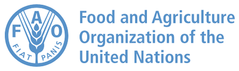

An open-access digital platform for sharing lectures, teaching materials and resources across the five ISAPS themes, co-created by the partners and open to all.
The Hub is organised by ISAPS theme. Each theme opens to reveal video lectures, reading lists and teaching materials. All content is open-access and free to use.
Select a theme to expand it, then open the sections inside.
Genomics, statistical genetics, transcriptomics, proteomics, metabolomics, microbiomics, and bioinformatics pipelines for livestock.
A self-paced course on how AI finds impactful DNA variants, from sequence conservation to protein language models, and uses them to sharpen genomic prediction and guide genome editing.
Start the course →Foundations of quantitative trait analysis: means and variances, additive and dominance components, heritability, and response to selection. Course and slides by Peter Sørensen (Aarhus University).
Start the course →Molecular data integration and computational modeling: sequencing and omics technologies, GWAS and fine-mapping, multi-omics and eQTL, gene networks, and high-dimensional methods in R. By Peter Sørensen (Aarhus University).
Start the course →Curated open-access readings and references for this theme will be published here as the platform is populated. In the meantime, explore related free courses on the FAO e-learning Academy →
Lecture slide decks, regional case studies and downloadable teaching materials co-developed by the partners will be shared here under an open-access licence.
Precision livestock farming, sensor technologies, and AI and machine-learning applications in animal production systems.
A self-paced short course: big data, machine learning, image processing, deep learning and high-throughput phenotyping, with two hands-on Python labs.
Start the course →Curated open-access readings and references for this theme will be published here as the platform is populated. In the meantime, explore related free courses on the FAO e-learning Academy →
Lecture slide decks, regional case studies and downloadable teaching materials co-developed by the partners will be shared here under an open-access licence.
Sustainable, climate-smart feeding strategies and feed efficiency adapted to East African production environments.
Curated open-access readings and references for this theme will be published here as the platform is populated. In the meantime, explore related free courses on the FAO e-learning Academy →
Lecture slide decks, regional case studies and downloadable teaching materials co-developed by the partners will be shared here under an open-access licence.
The interface of animal, human and environmental health within the ISAPS curriculum.
Curated open-access readings and references for this theme will be published here as the platform is populated. In the meantime, explore related free courses on the FAO e-learning Academy →
Lecture slide decks, regional case studies and downloadable teaching materials co-developed by the partners will be shared here under an open-access licence.
Biodiversity, breeding programmes, climate resilience, value chains, socio-economics and greenhouse-gas mitigation.
A self-paced course on genomic selection: SNP chips, genomic breeding values, the accuracy equation, breeding-program design and managing genetic diversity.
Start the course →The quantitative-genetics foundations of breeding: heritability, breeding values (BLUP) and genomic prediction (GBLUP), with hands-on R practicals. By Peter Sørensen (Aarhus University, CC0).
Start the course →Foundations of genetic variation and quantitative trait analysis: Hardy–Weinberg, drift, selection, linkage disequilibrium, heritability and the breeder's equation, with R tutorials. By Peter Sørensen (Aarhus University).
Start the course →Curated open-access readings and references for this theme will be published here as the platform is populated. In the meantime, explore related free courses on the FAO e-learning Academy →
Lecture slide decks, regional case studies and downloadable teaching materials co-developed by the partners will be shared here under an open-access licence.

ASAP-Bio partners with FAO to augment its own materials with 500+ free, multilingual, certified courses in agriculture, food security and sustainability.
Visit the FAO e-learning Academy →